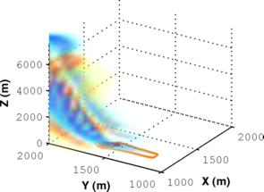

Programmed in Fortran 77, linked with data assimilation code, and MPI parallelized
Mandel et al., A wildland fire model with data assimilation.
Mathematics and Computers in Simulation, 79:584–606, 2008.
Semi-emperical fire model (SFIRE)
Burning area determined by a decreasing level-set function.
Spread rate and heat output determined emperically from real data.
Programmed in Fortran 90 with MPI and OpenMP parallelism.
Mandel, et al. Data assimilation for wildland fires: Ensemble Kalman filters in coupled atmosphere-surface models.
IEEE Control Systems Magazine, 29:47–65, June 2009.
SFIRE-WRF coupling
SFIRE receives wind from WRF
SFIRE returns heat, moisture, and smoke emissions to WRF
Mandel, Beezley, and Kochanski. Coupled atmosphere-wildland fire modeling with WRF 3.3 and SFIRE 2011.
Geoscientific Model Development, 4:591–610, 2011.
Model validation
Santa Ana fires of 2007
Fireflux experiment
Kochanski, et al. Real time simulation of 2007 Santa Ana fires.
Forest Ecology and Management, 15:136–149, 2013.
Kochanski, et al. Evaluation of WRF-SFIRE performance with field observations from the FireFlux experiment.
Geoscientific Model Development, 6:1109–1126, 2013.
Data assimilation
Predictor-corrector filters
Two step data assimilation method
Combines features of particle and ensemble Kalman filters
Improves Kalman filter with non-Gaussian error distributions
Mandel and Beezley. An ensemble Kalman-particle predictor-corrector filter for non-gaussian data assimilation.
ICCS 2009 5545:470–478, 2009.
Spectral Ensemble Kalman filters
Large sample
Small sample
FFT
Wavelet
New methods for estimating sampling statistics for ensemble methods
Mathematical proof that the Kalman filter converges
in $L^p$ to the Ensemble Kalman filter as the sample size increases.
Mandel, Cobb, and Beezley. On the convergence of the ensemble Kalman filter.
Applications of Mathematics, 56:533–541, 2011.
Morphing Ensemble Kalman filter
Forecast
Observation
EnKF
Morphing

Uses image registration and morphing to transform a model into a spatial representation.
Corrects for spatial errors of coherent features.
Released as a Fortran 90 library acting on NetCDF data files.
Beezley and Mandel. Morphing ensemble Kalman filters.
Tellus, 60A:131–140, 2008.
Spatial Epidemic Modeling
Susceptible
Infected
Removed
Morphing and spectral data assimilation techniques applied to spatial epidemic models for NIH research grant.
Krishnamurthy, et al. Bayesian Tracking of Emerging Epidemics Using Data Assimilation Methods.
Journal of Spatial and Spatio-temporal Epidemiology, to appear 2013.
Operational fire forecasting
Data preprocessing for WRF integration
Utilities written in Python and C:
Download data from USGS servers automatically
Convert geo-tagged TIFF files to WRF format
Plugin support for GeoTIFF data directly in WRF preprocessor
Beezley, et al. Integrating high-resolution static data into WRF for real fire simulations
Ninth Symposium on Fire and Forest Meteorology 2011.
WRF visualization in Google Earth
Beezley, et al. Data management and analysis with WRF and SFIRE.
IGARSS 2012, 5274–5277, 2012.
Israeli fire forecasting
Mandel, et al. New features in WRF-SFIRE and the wildfire forecasting and danger system in Israel.
Natural Hazards and Earth System Sciences, submitted 2013.
Overview of prior work
Maintenance of software repositories
Regression testing
Scalability analysis
Portability and dependencies
Administration of small clusters and network servers
Visualization and numerical experiments
Integration with recent tools and libraries
The "computer scientist" of the group.
What is data assimilation?
Invented for atmospheric forecasting
Numeric forecast defined on a grid
Data is given at arbitrary points in the domain (weather stations)
What is the best way to add this information to the forecast?
Optimal Interpolation
Consider some modeled process $V(x)$ and a single point of data $y$
Define $H$:
Interpolates from the model grid to the observation
Often called the observation function or the forward operator
The innovation, $y - H(x)$, represents the difference between prediction and observation
Now we need to modify the model to account for the difference from the observation.
Optimal Interpolation
The model is corrected using an inverse interpolation operator $K$:
$V\leftarrow V + K\left(y- H(V)\right)$
The operator $K$ projects the innovation onto the model grid.
The shape and width is chosen emperically by the statistical properties of the field.
Observations and Uncertainties
Observation functions are often more complicated and cannot be inverted uniquely